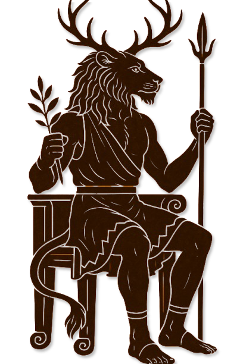

II · Zirkel Archivblatt 08
Der Zirkel des Ewigen Waldes
Der Glaube Klythesias
Klytharios, sieben Göttinnen und der geweihte Patrongott Kyreon stehen im Zentrum des amazonischen Glaubens. Sein Matriarchat verbindet Tempel, Gesellschaft und Gottkönigtum.

Gestalten dieser Überlieferung
Götterkreis & Gestalten
Die Namen, Bildnisse und Aspektzuordnungen dieser Glaubensrichtung. Verweise führen zu den entsprechenden Überlieferungen im Glaubenscodex.
Der Ewige Ahnengott
01Die Göttinnen
07Der geweihte Patrongott
01Die Feindbilder
05Diese Spur verliert sich im Archiv.
Zu dieser Suche wurde kein Eintrag gefunden. Versucht einen anderen Namen oder öffnet wieder alle Kapitel.
Einführung
Die Religion des Zirkels des Ewigen Waldes ist eine Religion und ein Pantheon, das zur Zeit der Hohen Drei und der Celestischen Synode als Abspaltung und Neuinterpretation entstanden ist. Die Bewohner des südlichen Tirnara spalteten sich von ihren Brüdern und Schwestern ab und gründeten das Amazonenreich Klythesia, mit ihrem Patrongott Kyreon, der als oberster Prophet und Apostel verehrt wird.
Die Religion selbst weist viele Ähnlichkeiten zu anderen Glaubenssystemen auf und ist in ihrem Kern nicht weit entfernt vom Alten Pantheon oder der Alerischen Kirche, die beide als die klarsten und reinsten Formen des Glaubens gelten.
Doch wurde der Pantheon der Amazonen dennoch stark umstrukturiert und anders aufgefasst.
Hintergrund
Die Religion des Zirkels des Ewigen Waldes ist eine Religion und ein Pantheon, das zur Zeit der Hohen Drei und der Celestischen Synode als Abspaltung und Neuinterpretation entstanden ist. In einer Zeit großer religiöser und kultureller Umwälzungen in Tirnara, stieß ein Prophet unter den Völkern des Landes auf. Trotz seiner leidenschaftlichen Predigten und seiner tiefen spirituellen Einsichten fand er lange Zeit kaum Gehör oder Unterstützung. Viele seiner Botschaften wurden von den etablierten Gemeinschaften und deren Führern ignoriert.
Der Prophet wandte sich schließlich dem Volk der Klythesia zu, einem Stamm im südlichen Tirnara, der offen für neue Ideen und Veränderungen war. Die Klythesianer, beeindruckt von seiner Vision und seiner spirituellen Klarheit, erkannten in ihm einen besonderen göttlichen Führer. Sie erkannten seine Vision als Wahrheit an und erklärten ihn zum neuen Patrongott.
Dieser Prophet nahm den Namen Kyreon an und gründete eine neue Religion, die eng mit den Wäldern und der Natur verbunden war. Unter seiner Führung entstand nicht nur das Reich der Amazonen Klythesia, sondern auch die Religion des Zirkels des Ewigen Waldes. Kyreon wurde als oberster Prophet und Apostel verehrt, und seine Lehren bildeten das Fundament des Glaubenssystems der Klythesianer.
Die Religion selbst weist viele Ähnlichkeiten zu anderen Glaubenssystemen auf und ist in ihrem Kern nicht weit entfernt vom Alten Pantheon oder der Alerischen Kirche, die beide als die klarsten und reinsten Formen des Glaubens gelten. Dennoch wurde der Pantheon der Amazonen stark umstrukturiert und in seiner Auffassung neu interpretiert, was zu einem einzigartigen und tief verwurzelten Glaubenssystem führte.
Doktrine
Die Religion des Zirkels des Ewigen Waldes ist durch eine strikte Hierarchie und eine zentrale göttliche Struktur geprägt, die sich markant von der Struktur der Alerischen Kirche unterscheidet. Während die Alerische Kirche durch ein System von neun guten Göttern und ihren neun infernalen Spiegelbildern geprägt ist, die ein Dualismus von Licht und Dunkelheit darstellen, verfolgt der Zirkel des Ewigen Waldes einen ganz anderen Ansatz.
Im Zentrum der Klythesianischen Religion steht Klytharios, der einzige Obergott und Herrscher. Klytharios wird als der Ahnengott verehrt, der über die Welt wacht und das Volk der Amazonen durch sein Abbild, Kyreon, führt. Kyreon wird als der oberste Prophet und göttlicher Führer angesehen, der die Welt nach den Vorgaben Klytharios' lenkt und unterwirft.
Klytharios vereint Elemente des Gottes Zatrach aus anderen Glaubenssystemen und Merkmale des Gottes Ordan aus der Alerischen Kirche. Diese einzigartige Synthese stellt eine Kombination dar, die in keiner anderen Religion vorkommt. Klytharios wird als ein Gott von großer Macht und Autorität angesehen, der sowohl Aspekte des Zatrach als auch des Ordan in sich vereint.
Unter Klytharios existieren neun Nebengötter, die jeweils eigene Bereiche und Verantwortlichkeiten haben. Diese Nebengötter sind:
- Aristhea , die Göttin der See und eine Gemahlin von Klytharios. Sie vereint Merkmale der Göttinnen Mariel, Lunara und Tethyra. Aristhea ist ein Beispiel für die Verschmelzung von Eigenschaften und Rollen aus verschiedenen göttlichen Figuren.
- Artemisra , die Göttin der Natur und Jagd. Artemisra zeigt eine klare Verbindung zur Göttin Sylvana, enthält jedoch auch Elemente von Zatrach. Dies ist ein weiteres Beispiel dafür, wie Zatrach in den Attributen anderer Gottheiten vorkommt.
Diese Verschmelzung von Eigenschaften und Merkmalen zieht sich durch die gesamte Gruppe der neun Nebengötter. Jeder von ihnen zeigt eine einzigartige Mischung aus Eigenschaften anderer göttlicher Figuren, was eine komplexe und vielschichtige göttliche Hierarchie schafft.
Neben diesen Göttern, aber nicht weniger bedeutend, ist Kyreon, der als Repräsentant von Klytharios in Erscheinung tritt. Kyreon wird nicht nur als göttlicher Führer verehrt, sondern auch als ein Gottkönig angesehen, der die Amazonen anführt und die religiösen und weltlichen Belange der Gemeinschaft leitet.
Diese Struktur unterscheidet sich grundlegend von der Alerischen Kirche, deren dualistisches System von guten und infernalen Göttern eine klare Trennung zwischen Licht und Dunkelheit aufrechterhält. Im Gegensatz dazu vereint die Religion des Zirkels des Ewigen Waldes verschiedene göttliche Merkmale in einer einzigen göttlichen Hierarchie und bietet eine differenzierte, aber integrierte Vorstellung von göttlicher Macht und Einfluss.
Nebengötter
Aristhea: Göttin des Meeres, der Autorität und des Wetters
In der Religion des Zirkels des Ewigen Waldes nimmt Aristhea eine zentrale Rolle als Göttin des Meeres, der Autorität und des Wetters ein. Als weise Frau und Gemahlin von Klytharios wird sie von den Amazonen besonders hoch verehrt. Aristhea symbolisiert die Macht und die Weisheit, die sowohl das maritime Leben als auch die gesellschaftliche Struktur der Klythesianer beeinflussen.
Aristhea wird als die Hüterin der Gewässer und Ozeane angesehen. Seefahrer und Fischer wenden sich an sie, um ihre Gunst und Unterstützung für sichere und erfolgreiche Reisen auf dem Wasser zu erbitten. Die Verehrung von Aristhea ist insbesondere für die maritime Kultur der Amazonen von großer Bedeutung, da ihre Rolle als Schutzpatronin des Meeres direkte Auswirkungen auf das Überleben und den Wohlstand der Gemeinschaft hat.
Zusätzlich zu ihrer Verbindung zum Meer verkörpert Aristhea auch die Prinzipien der Autorität und Führung. In ihrer Funktion als Matriarchin aller Frauen repräsentiert sie die Stärke und Weisheit der weiblichen Führungskraft. Die Amazonen ehren sie nicht nur als göttliche Macht, sondern auch als idealisierte Form weiblicher Autorität, die als Vorbild für Führungskräfte und Entscheidungsträgerinnen dient.
Aristhea hat ebenfalls Einfluss auf das Wetter und wird angerufen, um das Klima zu beeinflussen und Wetterbedingungen zu regulieren. Besonders in Zeiten der Not oder bei bedeutenden landwirtschaftlichen und maritimen Unternehmungen wird sie um günstige Wetterbedingungen gebeten. Ihre Kontrolle über das Wetter macht sie zu einer wichtigen Figur für die Planung und Durchführung solcher Aktivitäten.
Die Verehrung von Aristhea erfolgt durch Gebete und Opfergaben, die speziell ihren verschiedenen Aspekten gewidmet sind. Seefahrer und Fischer leisten besondere Opfer, um günstige Bedingungen für ihre Reisen zu sichern. Ihre Bedeutung als Matriarchin wird durch Zeremonien und Rituale unterstrichen, die die Werte von Weisheit und Stärke hervorheben und fördern.
Tempel und Altäre, die ihr gewidmet sind, befinden sich oft in Küstennähe oder an Orten mit maritimer Bedeutung. Ihre Statuen sind häufig mit Symbolen des Meeres geschmückt, wie Muscheln oder Wellen, und manchmal trägt sie eine Krone oder ein Zepter, die ihre Autorität repräsentieren. Insgesamt verkörpert Aristhea die tiefe Verbundenheit der Klythesianer mit dem Meer und den weiblichen Werten von Weisheit und Autorität.
Artemisra: Göttin der Natur und der Jagd
In der Religion des Zirkels des Ewigen Waldes ist Artemisra die Göttin der Natur und der Jagd. Sie wird als Schwester von Klytharios verehrt und stellt eine zentrale Figur in der Verehrung der natürlichen Welt und ihrer Geschöpfe dar. Artemisra symbolisiert die Unberührtheit der Natur und die Harmonie zwischen Mensch und Umwelt.
Artemisra wird von den Amazonen besonders geschätzt und geehrt, indem man ihre Tiere achtet und Opfer in Form von Jagden darbringt. Die Jagd wird nicht nur als Mittel zur Nahrungsbeschaffung betrachtet, sondern auch als heilige Zeremonie, bei der die Trophäen der Beute auf ihrem Altar verbrannt werden. Diese Opfergaben sind ein Zeichen des Respekts und der Dankbarkeit gegenüber der Göttin und der Natur, die sie schützt und nährt.
Die Verehrung von Artemisra beinhaltet auch die Jagd auf besonders gefährliche Feinde oder Bestien. In dieser Praxis vereinen sich spirituelle und praktische Aspekte, da das Bekämpfen von Bedrohungen durch wilde Kreaturen sowohl als Akt des Glaubens als auch als notwendige Maßnahme für das Wohl der Gemeinschaft angesehen wird. Diese Handlungen dienen dazu, die Stärke und den Mut der Jäger zu beweisen und zugleich die Göttin durch das Überwinden von Herausforderungen zu ehren.
Artemisra wird als eine kraftvolle und majestätische Göttin dargestellt, deren Präsenz und Einfluss über die Wälder und Wildnis herrschen. Die Rituale und Opferungen, die ihr gewidmet sind, betonen die enge Verbindung zwischen den Amazonen und der Natur, und spiegeln die tiefe Ehrfurcht wider, die sie für die göttlichen Kräfte und die natürliche Welt empfinden.
Elythra: Göttin der Fruchtbarkeit, Liebe, Kunst und Ästhetik
Elythra ist die Tochter von Klytharios und nimmt in der Religion des Zirkels des Ewigen Waldes eine bedeutende Rolle als Göttin der Fruchtbarkeit, Liebe, Kunst und Ästhetik ein. Sie wird von den Amazonen für ihre Verbindungen zu den freudvollen und schöpferischen Aspekten des Lebens verehrt.
Elythra symbolisiert die Kraft der Fruchtbarkeit und der Erneuerung. Ihre Verehrung wird durch lebhafte Festlichkeiten, Orgien und ausgelassene Feiern zum Ausdruck gebracht. Diese Rituale sind nicht nur Ausdruck der Freude und des Lebens, sondern auch eine Feier der Verbindung zwischen Menschen und der Göttin. In diesen Festen kommen die Gemeinschaft zusammen, um Elythra zu ehren und ihre Gaben der Liebe und des Lebens zu feiern.
Neben ihrer Rolle als Göttin der Fruchtbarkeit ist Elythra auch die Patronin der Kunst, Musik und Ästhetik. Ihre Verehrung umfasst eine breite Palette kreativer Ausdrucksformen, die von Musik und Tanz bis zu bildender Kunst reichen. Die Menschen bringen ihr Opfergaben in Form von Kunstwerken, musikalischen Darbietungen und ästhetischen Kreationen dar, um ihre Dankbarkeit und Verehrung auszudrücken.
Die Feste und Feiern zu Ehren Elythras sind prächtige Ereignisse, die oft große gesellschaftliche Bedeutung haben. Sie bieten den Teilnehmern die Gelegenheit, sich in einer Atmosphäre von Freude und Kreativität zu vereinen. Diese Feiern sind nicht nur eine Art der Verehrung, sondern auch eine Möglichkeit, die soziale und kulturelle Kohäsion der Gemeinschaft zu stärken.
In der Darstellung wird Elythra oft mit Symbolen von Liebe und Schönheit versehen, wie Blumen, Musikinstrumenten und kunstvollen Verzierungen. Ihre Präsenz und Einfluss sind allgegenwärtig in den Aspekten des Lebens, die Freude, Kreativität und zwischenmenschliche Verbindung fördern. Die Verehrung von Elythra bringt eine leuchtende und lebensbejahende Dimension in die spirituellen und sozialen Praktiken der Amazonen.
Kallistra: Göttin des Krieges, der Arbeiter und des Handwerks
Kallistra ist die Tochter von Klytharios und nimmt in der Religion des Zirkels des Ewigen Waldes eine zentrale Rolle als Göttin des Krieges, der Arbeiter und des Handwerks ein. Sie wird von den Amazonen als starke und unerschütterliche Figur verehrt, die die Krieger, Arbeiter und Handwerker schützt und leitet.
Kallistra verkörpert die Prinzipien des Krieges und des handwerklichen Schaffens. Ihre Verehrung umfasst eine Vielzahl von Ritualen, die sowohl ihre kämpferischen als auch ihre handwerklichen Aspekte ehren. Im Namen der Göttin werden Schaukämpfe und militärische Wettkämpfe abgehalten, die nicht nur die Stärke und Tapferkeit der Krieger demonstrieren, sondern auch der Göttin ihren Respekt zollen. Diese Ereignisse sind von großer Bedeutung für die Gemeinschaft, da sie die kriegerische Disziplin und den Kampfgeist feiern, die Kallistra verkörpert.
Zusätzlich zu den Schaukämpfen ehren die Amazonen Kallistra durch Rituale, die Handwerkskunst und Arbeit würdigen. Als Patronin der Handwerker und Arbeiter wird ihr besondere Achtung geschenkt, und es gibt Zeremonien, bei denen die Fertigkeiten und Errungenschaften von Handwerkern und Arbeitern gewürdigt werden. Diese Rituale dienen dazu, die harte Arbeit und die Handwerkskunst, die Kallistra repräsentiert, zu ehren und zu fördern.
In ihrer Verehrung wird Kallistra auch durch extreme Opfergaben geehrt. Historisch bedeutend sind die menschlichen Opfer, die an ihren Altären dargebracht werden. Diese Opferungen sind eine ernsthafte und feierliche Praxis, die die Hingabe und das Vertrauen der Gemeinschaft in die Göttin zum Ausdruck bringt. Die Opfergaben sind ein Symbol für die tief empfundene Verehrung und die Bereitschaft der Anhänger, große Opfer für den Schutz und die Unterstützung der Göttin zu bringen.
Kallistra wird in der Darstellung oft mit Symbolen des Krieges und des Handwerks gezeigt, wie Waffen, Werkzeuge und Rüstungen. Ihre Präsenz strahlt sowohl die Stärke und den Mut eines Kriegers als auch die Präzision und Geschicklichkeit eines Handwerkers aus. Die Verehrung von Kallistra bringt eine kraftvolle und dynamische Dimension in die religiösen und sozialen Praktiken der Amazonen, indem sie die Aspekte des Krieges, der Arbeit und des handwerklichen Schaffens miteinander vereint.
Klythara: Göttin der List und Rache
Klythara ist die Schwester von Klytharios und spielt eine zentrale Rolle im Pantheon des Zirkels des Ewigen Waldes als Göttin der List und Rache. Sie wird besonders von den Amazonen verehrt, die nach Rache sinnen oder sich in politischen Angelegenheiten engagieren. Ihre Verehrung spiegelt sich in Ritualen und Praktiken wider, die auf ihre Aspekte von List und Vergeltung fokussiert sind.
Klythara verkörpert die Prinzipien der Rache und der strategischen Intelligenz. Als Göttin, die für die Durchsetzung von Gerechtigkeit durch Rache zuständig ist, bietet sie den Amazonen eine spirituelle und moralische Grundlage für ihre eigenen Handlungen im Bereich der Vergeltung und des politischen Machtspiels. Anhänger, die sich ungerecht behandelt fühlen oder eine tief empfundene Feindseligkeit hegen, suchen ihre Führung und ihren Beistand, um ihre Ziele zu erreichen.
Ein markantes Merkmal der Verehrung von Klythara innerhalb des Kults ist die Praxis von Ehrenmorden. Diese werden in einem ritualisierten Rahmen durchgeführt, um die Göttin der List und Rache zu ehren. Die Durchführung solcher Morde ist an strenge Regeln gebunden: Sie müssen rituell angekündigt werden, und die Handlung selbst muss den Vorgaben und der Tradition des Kults entsprechen. Diese Praxis ist nicht nur ein Akt der Rache, sondern auch ein symbolischer Akt der Verehrung und der Anerkennung von Klytharas Macht über die Gerechtigkeit und die Durchsetzung des Gesetzes durch persönliche Vergeltung.
Klythara wird oft als eine Göttin von großer Raffinesse und Berechnung dargestellt. Ihre Symbole umfassen oft Masken, Spiegel oder andere Zeichen der Täuschung und Intelligenz. Diese Darstellungen verdeutlichen ihre Rolle als Meisterin der List und der strategischen Planung. Die Anhänger suchen ihre Führung nicht nur in Zeiten der Rache, sondern auch in politischen und sozialen Angelegenheiten, bei denen Klugheit und strategisches Denken erforderlich sind.
Die Verehrung von Klythara ist durch eine Atmosphäre von Geheimhaltung und Ehrfurcht geprägt. Die Anhänger glauben, dass durch die Ausübung ihrer Rituale und das Befolgen ihrer Gebote sie die Göttin ehren und gleichzeitig die Prinzipien der Gerechtigkeit und des Machtspiels aufrechterhalten. Die Göttin wird so zu einer zentralen Figur in den dunkleren Aspekten der amazonischen Gesellschaft, wo List und Rache eine wichtige Rolle spielen.
Nekara: Göttin des Todes
Nekara ist die Gemahlin von Klytharios und wird von den Amazonen als Göttin des Todes verehrt. Ihre Rolle im Pantheon des Zirkels des Ewigen Waldes ist von zentraler Bedeutung, da sie die Übergangsphase zwischen Leben und Tod regelt und den Toten ihren letzten Frieden gewährt.
Nekara wird als eine mächtige und respektvolle Figur angesehen, die über die Welt der Toten wacht. Die Verehrung von Nekara manifestiert sich in den praktischen und spirituellen Aspekten der Bestattungskultur der Amazonen. Die Toten werden in versiegelten Ahnenkrypten bestattet, die speziell für den letzten Ruheort der Verstorbenen errichtet werden. Diese Krypten sind nicht nur Orte der Ruhe, sondern auch heilige Stätten, die von einer tiefen Ehrfurcht geprägt sind.
Um die Sicherheit und den Schutz der Toten zu gewährleisten, sind die Ahnenkrypten mit untoten Kriegerinnen oder Mumien besetzt. Diese untoten Wächter dienen als Beschützer der verstorbenen Seelen und stellen sicher, dass die Heiligkeit und Unversehrtheit der Stätten gewahrt bleiben. Die Präsenz dieser Wächter ist ein wichtiges Symbol für die Macht und Autorität, die Nekara über den Tod und das Jenseits ausübt.
Der Zugang zu den Ahnengruften ist streng reglementiert. Nur Priesterinnen von Nekara dürfen diese heiligen Stätten betreten. Diese Priesterinnen sind dafür verantwortlich, die Rituale der Bestattung durchzuführen, die Toten zu segnen und die Wächter der Krypten zu betreuen. Ihr Status innerhalb der religiösen Hierarchie ist hoch angesehen, da sie die direkten Vermittler zwischen der Göttin und den Verstorbenen darstellen.
Nekara wird oft mit Symbolen des Todes und der Ewigkeit dargestellt, wie Totenschädeln, Särgen oder Zeichen der Unsterblichkeit. Ihre Darstellung reflektiert sowohl die respektvolle Distanz zum Tod als auch die Macht, die sie über das Jenseits ausübt. Die Verehrung von Nekara bringt einen tiefen und bedeutungsvollen Aspekt in die religiösen Praktiken der Amazonen, indem sie den Tod als einen wichtigen Teil des Lebenszyklus anerkennt und ihm einen ehrenvollen Platz innerhalb ihrer Glaubenswelt einräumt.
Alethea: Göttin des Wissens, der Magie und Astrologie
Alethea ist eine Tochter von Klytharios und wird von den Amazonen als Göttin des Wissens, der Magie und der Astrologie verehrt. Ihre Rolle im Pantheon des Zirkels des Ewigen Waldes ist von großer Bedeutung, da sie die Hüterin des Wissens und der Geheimnisse des Universums ist.
Die Verehrung von Alethea äußert sich in der Errichtung von Schulen und Tempeln, die der Vermittlung von Wissen und Bildung gewidmet sind. Diese Einrichtungen dienen als Zentren des Lernens, wo die Amazonen in verschiedenen Disziplinen unterrichtet werden, die von praktischen Kenntnissen bis hin zu spirituellem Wissen reichen. Die Tempel von Alethea sind Orte des Studiums und der Forschung, wo sich Wissenssuchende versammeln, um neue Erkenntnisse zu gewinnen und bestehende Kenntnisse zu vertiefen.
Zusätzlich zu den Bildungseinrichtungen spielen Magierorden eine wichtige Rolle in der Verehrung von Alethea. Diese Orden sind spezialisierte Gemeinschaften, die sich der Erforschung und Praxis der Magie widmen. In diesen Orden wird die magische Kunst gelehrt und gepflegt, und die Mitglieder arbeiten daran, die Geheimnisse der magischen Kräfte zu ergründen und anzuwenden. Die Mitgliedschaft in einem solchen Orden ist ein Zeichen von hohem Ansehen und tiefem Engagement für die Göttin und ihre Lehren.
Alethea wird oft mit Symbolen des Wissens und der Weisheit dargestellt, wie Büchern, Sternenkarten oder magischen Artefakten. Ihre Präsenz und Einfluss sind in den Bereichen der Intelligenz, der magischen Fähigkeiten und der astrologischen Einsichten spürbar. Ihre Anhänger glauben, dass durch das Studium und die Praxis von Magie und Wissenschaft sie Alethea ehren und ihre eigenen Fähigkeiten und Kenntnisse erweitern.
Die Verehrung von Alethea bringt einen intellektuellen und mystischen Aspekt in die religiösen Praktiken der Amazonen. Die Göttin ist eine Quelle der Inspiration und der Erleuchtung, und ihre Lehren fördern sowohl das persönliche Wachstum als auch die Weiterentwicklung der Gemeinschaft durch Wissen und magische Fertigkeiten.
Feindbilder
Tethron: Der Verschlinger und Unterweltgott des Meeres
Tethron ist ein zentrales Feindbild in der Religion des Zirkels des Ewigen Waldes. Er wird als der Verschlinger und Unterweltgott des Meeres verehrt, und seine Darstellung als das Bild des Mannes dient dazu, die Männerwelt in einem dämonischen Licht zu zeigen. In der religiösen Lehre der Amazonen wird Tethron als ein Symbol für die negativen Eigenschaften betrachtet, die mit der männlichen Herrschaft und Macht assoziiert werden.
In der amazonischen Weltanschauung repräsentiert Tethron die Dunkelheit und Zügellosigkeit, die sie mit der männlichen Macht verknüpfen. Er wird oft als ein unbarmherziger Gott der Untiefen des Meeres dargestellt, der für Piraterie, Versklavung und Schändung steht. Diese Eigenschaften stehen im krassen Gegensatz zu den Tugenden und der moralischen Überlegenheit, die den Frauen der Amazonen zugeschrieben werden.
Tethron ist in der Vorstellung der Amazonen der Inbegriff des destruktiven und gewalttätigen Mannes, der Macht nicht zum Wohl, sondern zur Unterdrückung und zum Missbrauch nutzt. Diese Vorstellung wird durch seine Assoziation mit den finsteren und gefährlichen Aspekten des Meeres verstärkt, die in den Augen der Amazonen die Chaos und das Unrecht symbolisieren, das Männer in die Welt bringen können, wenn sie an die Macht kommen.
Die Verehrung Tethrons ist von intensiver Ablehnung und Feindseligkeit geprägt. Er ist ein Symbol für alles, was die Amazonen meiden und bekämpfen wollen. Diese Feindbild dient nicht nur dazu, die positiven Werte und die Stärke der Frauen zu betonen, sondern auch als warnendes Beispiel für die Folgen, die die Herrschaft von Männern in ihrer Welt haben könnte. In der religiösen Praxis wird Tethron als eine Verkörperung des Bösen und der Verderbnis angesehen, dessen Einfluss durch ständige Wachsamkeit und Durchsetzung der amazonischen Ideale bekämpft werden muss.
Baalzor: Der Vater des Verderbens
Baalzor ist eine besonders verhasste und verachtete Figur in der Religion des Zirkels des Ewigen Waldes. Als Vater von Tethron steht er für die höchste Verkörperung des Bösen und der Unreinheit. Während Tethron bereits als ein Symbol für Zügellosigkeit und das Böse gilt, wird Baalzor noch intensiver gehasst und abgelehnt.
Baalzor repräsentiert die extremsten Formen der Verderbnis und des Unrechts. Er ist das personifizierte Böse, das für Verwaltigungen, Schändung und alles steht, was den Idealen der Frauen in der amazonischen Gesellschaft widerspricht. In der Vorstellung der Amazonen ist er der Archetyp des Feindes, der gegen alles kämpft, was sie als heilig und wertvoll betrachten.
Sein Einfluss wird als destruktiv und gefährlich empfunden, da er die negativen Kräfte verkörpert, die darauf abzielen, die amazonische Gesellschaft zu unterwerfen und zu zerstören. Er symbolisiert die marodierenden Kreaturen, Vampire und andere unheilige Wesen, die das Ziel haben, Unruhe und Chaos zu stiften. Diese Kreaturen stehen für die Bedrohungen, die von außen kommen und die Ordnung, Reinheit und das Wohl der Gemeinschaft der Amazonen gefährden.
Die Ablehnung und Verachtung gegenüber Baalzor sind tief in der amazonischen Religion verwurzelt. Seine Existenz wird als eine ständige Bedrohung angesehen, die es zu bekämpfen gilt. In den Ritualen und religiösen Praktiken der Amazonen wird Baalzor als das ultimative Böse betrachtet, gegen das alle Kräfte mobilisiert werden müssen. Sein Name und seine Symbolik dienen als Mahnung für die Amazonen, ihre Ideale zu schützen und sich gegen jegliche Form der Verderbnis und des Unrechts zu wappnen.
Lyrion: Der Gott des Betrugs und Handels
Lyrion ist ein verhasster Feind der Amazonen, bekannt als der Gott des Betrugs und des Handels. In der amazonischen Weltanschauung repräsentiert er die dunklen Seiten des Handels und die Täuschung, die von unzuverlässigen und betrügerischen Mächten ausgeht. Seine Verehrung ist mit feindlichen Völkern und fanatischen Kulten verknüpft, die versuchen, die Amazonen zu unterwerfen und zu kontrollieren.
Lyrion wird als die Inkarnation des Betrugs und der Verschlagenheit dargestellt. Seine Verbindung zum Handel wird von den Amazonen als negativ angesehen, da dieser oft mit Täuschung, Manipulation und dem Versuch verbunden ist, andere auszunutzen. In ihrer Sichtweise ist Lyrion der Gott, der unheilige Geschäfte und unfaire Praktiken verehrt und damit gegen die Prinzipien von Ehrlichkeit und Integrität steht, die sie hochhalten.
Zusätzlich zu seinem Einfluss auf den Handel wird Lyrion auch mit unreinen Geistern und Wesen assoziiert. Die Amazonen werden gewarnt, besondere Vorsicht walten zu lassen, da diese Geister und Wesen möglicherweise von Lyrion gesandt sind, um Verwirrung zu stiften oder Unheil zu bringen. Die Präsenz solcher Wesen wird als potenzielle Bedrohung betrachtet, die die Reinheit und Ordnung der amazonischen Gesellschaft gefährden könnte.
Die Feindseligkeit gegenüber Lyrion spiegelt sich in der religiösen Praxis wider, wo seine Verehrung und seine Symbole als Zeichen von Täuschung und Verrat angesehen werden. Die Amazonen betonen die Notwendigkeit, sich von den Tricks und Intrigen zu schützen, die mit dem Gott Lyrion in Verbindung stehen, und sie lehren, dass eine gesunde Skepsis und Wachsamkeit erforderlich sind, um die Gefahren zu erkennen, die von ihm und seinen Anhängern ausgehen könnten.
Gryloth: Der Gott der Pestilenz und Unreinheit
Gryloth ist ein gefürchtetes Feindbild in der Religion des Zirkels des Ewigen Waldes. Er steht für Pestilenzen, Unreinheit und Verderbtheit und wird in der amazonischen Glaubenswelt als eine männliche Gottheit dargestellt, die symbolisch für die negativen Eigenschaften steht, die in ihrer Kultur mit Männern und deren unreinlichen Natur assoziiert werden.
Gryloth wird als die personifizierte Verkörperung von Krankheit und moralischer Verderbnis angesehen. Er ist der Gott, der für Seuchen, Zersetzung und den Zerfall von Ordnung und Reinheit verantwortlich gemacht wird. In der Vorstellung der Amazonen ist er eine gefährliche Präsenz, die sowohl physische als auch spirituelle Verderbnis verbreitet. Seine Verbindung zu Unreinheit und Krankheit macht ihn zu einem Symbol für alles, was die amazonische Gemeinschaft als schädlich und abstoßend empfindet.
Die Darstellung von Gryloth als männliche Gottheit verstärkt die religiöse Vorstellung, dass Männer oft Unreinheit und Verderbtheit symbolisieren. Diese Sichtweise spiegelt sich in den religiösen Lehren wider, die Männern eine größere Neigung zu moralischer und physischer Verderbnis zuschreiben. Gryloth dient somit als Symbol für diese Eigenschaften, die die Amazonen meiden und bekämpfen wollen.
Seine Verehrung wird mit großer Ablehnung begegnet, und seine Symbole stehen für die Bedrohungen, die er für die Reinheit und Gesundheit der amazonischen Gemeinschaft darstellt. Die Amazonen betrachten Gryloth als eine dunkle Kraft, die es zu verhindern gilt, indem sie Rituale und Praktiken etablieren, um sich vor den von ihm verursachten Seuchen und Verderbnis zu schützen.
Gryloth ist ein ständiger Erinnerung an die Gefahren, die von Unreinheit und moralischer Verderbnis ausgehen, und seine Präsenz wird in der amazonischen Glaubenswelt als eine ständige Herausforderung betrachtet, gegen die man mit aller Entschlossenheit und Reinheit kämpfen muss.
Aurion & Noxus: Die Zweigesichtigen Götter des Wahnsinns
Aurion und Noxus sind zwei Gesichter des gleichen Gottes und stehen für den Wahnsinn sowie geistige Gebrechen. In der Religion des Zirkels des Ewigen Waldes werden sie als besonders abstoßend und bedrohlich betrachtet. Diese Zwiesichtigkeit und ihr Einfluss auf den menschlichen Verstand machen sie zu einem zentralen Feindbild der Amazonen.
Aurion und Noxus verkörpern den zweigesichtigen Gott, der sowohl die verführerische als auch die zerstörerische Seite des Wahnsinns darstellt. Aurion wird oft als die maskierte, verführerische Erscheinung gezeigt, während Noxus die chaotische und zerstörerische Natur des Wahnsinns verkörpert. Zusammen symbolisieren sie die Gefahr von Täuschung und innerem Chaos.
In der amazonischen Glaubenswelt wird Aurion & Noxus häufig als das Bild eines Freundes dargestellt, der sich als Wolf im Schafspelz tarnt. Dies verstärkt das Bild eines trügerischen Wesens, das den Menschen in die Irre führt und sie zu ihrem eigenen Unheil verleitet. Die Vorstellung, dass dieser Gott wie ein Freund erscheint, nur um Verwirrung und Zerrüttung zu bringen, macht ihn besonders gefährlich und verachtenswert.
Darüber hinaus wird Aurion & Noxus oft für jegliche geistigen Gebrechen verantwortlich gemacht, die in der amazonischen Gemeinschaft auftreten. Die Amazonen sehen ihn als eine Art Sündenbock für alles, was den Verstand und das emotionale Gleichgewicht ihrer Mitglieder destabilisieren kann. Diese göttliche Zuweisung erklärt, warum psychische Störungen oder andere geistige Probleme in der Kultur so stark mit ihm in Verbindung gebracht werden.
Die Feindseligkeit gegenüber Aurion & Noxus ist in den amazonischen Lehren tief verwurzelt. Sie repräsentieren die dunklen Kräfte des Wahnsinns und der Täuschung, die es zu bekämpfen gilt. Die Amazonen betonen die Notwendigkeit, den eigenen Verstand zu bewahren und sich gegen die subtilen, zerstörerischen Einflüsse dieser Gottheit zu wappnen. In ihren Ritualen und Praktiken wird große Sorgfalt darauf verwendet, die Gefahren von Aurion & Noxus abzuwehren und den inneren Frieden der Gemeinschaft zu schützen.
Matriarchat
Der Tempel des Zirkels des Ewigen Waldes ist eine komplexe religiöse und soziale Struktur, die tief in den Überzeugungen der Amazonen verwurzelt ist. Er wird von Priesterinnen geführt, die dem Patrongott und Gottkönig Kyreon dienen. Kyreon ist die zentrale Figur, die als Sprachrohr zu den Göttern, insbesondere zu Klytharion, dem Ahnengott, fungiert. Seine Position verleiht ihm sowohl spirituelle als auch weltliche Autorität.
Die Hohe Matriarchin nimmt eine besonders herausragende Rolle ein und wird als direkte Gemahlin von Kyreon betrachtet. Ihre Position ist symbolisch, stellt jedoch die höchste Ehre und den höchsten Status innerhalb des Tempels dar. Sie repräsentiert die Verbindung zwischen dem Gottkönig und der Welt der Amazonen, und ihre Aufgaben gehen über rein rituelle Funktionen hinaus.
Die Erz-Matriarchin, die in der Struktur als Konkubine von Kyreon angesehen wird, dient ebenfalls in einer symbolischen Rolle. Ihre Funktion ist ebenfalls von großer Bedeutung, da sie die menschliche Präsenz und Führung innerhalb des Tempels repräsentiert. Es ist wichtig zu betonen, dass diese Rollen eher symbolisch zu verstehen sind, auch wenn sexuelle Praktiken innerhalb des Tempels vorkommen können. Der Fokus liegt auf der symbolischen und spirituellen Bedeutung dieser Positionen.
Unter den Matriarchinnen, die als Oberhäupter der verschiedenen Clans fungieren, gibt es die Orakel. Diese sind für die Leitung von Tempeln und Heiligtümern verantwortlich und haben ähnliche Führungsaufgaben wie die Mantis. Die Orakel spielen eine wesentliche Rolle in der Durchführung von Ritualen und in der Vermittlung der göttlichen Botschaften, die sie von Kyreon und den anderen Göttern erhalten.
Die Mantis, die ebenfalls eine wichtige religiöse Führungsposition innehaben, übernehmen eine ähnliche Rolle wie die Orakel. Sie sind die spirituellen Führerinnen und Ratgeberinnen der Gemeinschaft und arbeiten eng mit den Orakeln zusammen, um sicherzustellen, dass die religiösen Praktiken und Lehren der Amazonen eingehalten werden.
Die Hierarchie im Tempel des Zirkels des Ewigen Waldes spiegelt die tiefe Verbindung zwischen der spirituellen und weltlichen Führung wider. Kyreon als Gottkönig und Sprachrohr der Götter steht an der Spitze, während die Matriarchinnen, Orakel und Mantis die verschiedenen Aspekte der religiösen und sozialen Ordnung der Amazonen vertreten. Diese Struktur gewährleistet die Erhaltung der göttlichen Ordnung und die Förderung der spirituellen und sozialen Werte innerhalb der Gemeinschaft.
Ämter, Dienste und Berufungen
Hierarchie
Die überlieferte Reihenfolge und die Aufgaben dieser Glaubensgemeinschaft. Öffnet einen Rang, um seine Beschreibung zu lesen.
01Hohe Matriarchin
Die Hohe Matriarchin steht an der Spitze des religiösen Hierarchiebaums des Zirkels des Ewigen Waldes. Sie ist die symbolische Gemahlin des Gottkönigs Kyreon und verkörpert die höchste Autorität und Ehre innerhalb des Tempels. Ihre Rolle umfasst sowohl die spirituelle Führung als auch die Repräsentation der Göttlichkeit auf Erden. Sie ist die direkte Verbindung zwischen Kyreon und den anderen Göttern und überwacht die gesamte religiöse Praxis und das spirituelle Wohl der Gemeinschaft.
02Erz-Matriarchin
Die Erz-Matriarchin dient als Konkubine des Kyreon und spielt eine bedeutende symbolische Rolle innerhalb der Hierarchie. Obwohl ihre Funktion vorwiegend symbolisch ist, übernimmt sie wesentliche Aufgaben in der Verwaltung und Führung der Tempelangelegenheiten. Ihre Präsenz repräsentiert die Verbindung zwischen dem Göttlichen und dem Menschlichen, und sie unterstützt die Hohe Matriarchin in deren Aufgaben.
03Orakel
Die Orakel sind hochrangige Priesterinnen, die Tempel und Heiligtümer leiten. Sie fungieren als Vermittlerinnen zwischen den Göttern und den Gläubigen und sind verantwortlich für die Durchführung von Ritualen und die Weitergabe göttlicher Botschaften. Ihre Führung ist entscheidend für die Aufrechterhaltung der religiösen Praktiken und der spirituellen Integrität der Gemeinschaft.
04Mantis
Die Mantis sind die religiösen Führerinnen, die innerhalb der Tempel für die Ausbildung und Anleitung der Priesterinnen verantwortlich sind. Sie spielen eine wichtige Rolle in der spirituellen Führung und der Wahrung der religiösen Lehren. Ihre Aufgaben umfassen die Durchführung von Zeremonien, die Pflege der Rituale und die Unterstützung der Orakel.
05Sybilla
Die Sybilla ist eine weise Frau, die besondere prophetische Fähigkeiten besitzt. Sie hat die Fähigkeit, zukünftige Ereignisse vorherzusagen und göttliche Wahrheiten zu offenbaren. Ihre Einsichten sind von großer Bedeutung für die Entscheidungsfindung innerhalb der Religion und für die spirituelle Orientierung der Gemeinschaft.
06Seherin
Die Seherin hat die Aufgabe, Visionen und göttliche Botschaften zu empfangen und zu interpretieren. Sie ist eine wichtige spirituelle Beraterin und hilft den Gläubigen, ihre Verbindung zu den Göttern zu stärken. Ihre Fähigkeit, Visionen zu deuten, ist entscheidend für die Erfüllung der religiösen Pflichten und die Ausrichtung der Rituale.
07Hohe Priesterin
Die Hohe Priesterin ist eine erfahrene und respektierte Priesterin, die für die Aufsicht über die rituellen Abläufe innerhalb eines Tempels verantwortlich ist. Sie sorgt dafür, dass alle religiösen Handlungen korrekt durchgeführt werden und dass die spirituelle Disziplin eingehalten wird. Ihre Rolle ist essenziell für die Aufrechterhaltung der Ordnung und Reinheit in der Praxis.
08Priesterin
Die Priesterinnen sind die Hauptakteurinnen in den täglichen religiösen Aktivitäten. Sie führen Zeremonien durch, beten für die Gläubigen und halten die Rituale ab. Sie sind die direkten Ansprechpartnerinnen für die Gläubigen und unterstützen die Hohe Priesterin und die anderen höheren Ränge bei ihren Aufgaben.
09Adept
Die Adepten sind angehende Priesterinnen, die sich in der Ausbildung befinden und sich auf ihre zukünftige Rolle vorbereiten. Sie lernen die religiösen Praktiken, die Ritualtechniken und die spirituellen Lehren. Ihre Ausbildung umfasst sowohl theoretisches Wissen als auch praktische Erfahrung.
10Novize
Novizen sind die ersten Schritte in der religiösen Hierarchie. Sie beginnen ihre Ausbildung in der Religion und lernen die Grundlagen der amazonischen Glaubenslehre und der Tempelrituale. Ihre Rolle ist hauptsächlich lernend, während sie sich auf ihre zukünftigen Aufgaben als Priesterinnen vorbereiten.
11Schülerin
Schülerinnen sind die jüngsten Mitglieder des Tempels, die sich auf den Weg der spirituellen Erziehung begeben. Sie lernen die grundlegenden Prinzipien und Praktiken der Religion und bereiten sich darauf vor, tiefere Einsichten und Kenntnisse zu erlangen. Ihre Aufgabe ist es, die Grundlagen der Religion zu verstehen und zu verinnerlichen.
12Laie
Laien sind die nicht-religiösen Mitglieder der amazonischen Gesellschaft, die außerhalb der Tempelhierarchie stehen. Sie nehmen an religiösen Zeremonien teil und folgen den Lehren der Religion, ohne aktiv in die religiöse Praxis oder Leitung involviert zu sein. Sie sind die Gläubigen, die den Tempel unterstützen und von den spirituellen Führungen der höheren Ränge profitieren.
Im selben Glaubensgeflecht